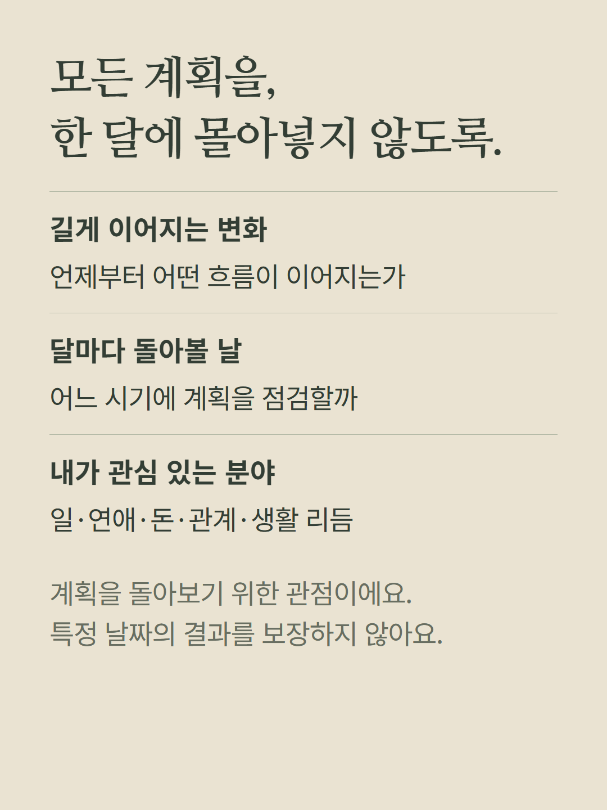
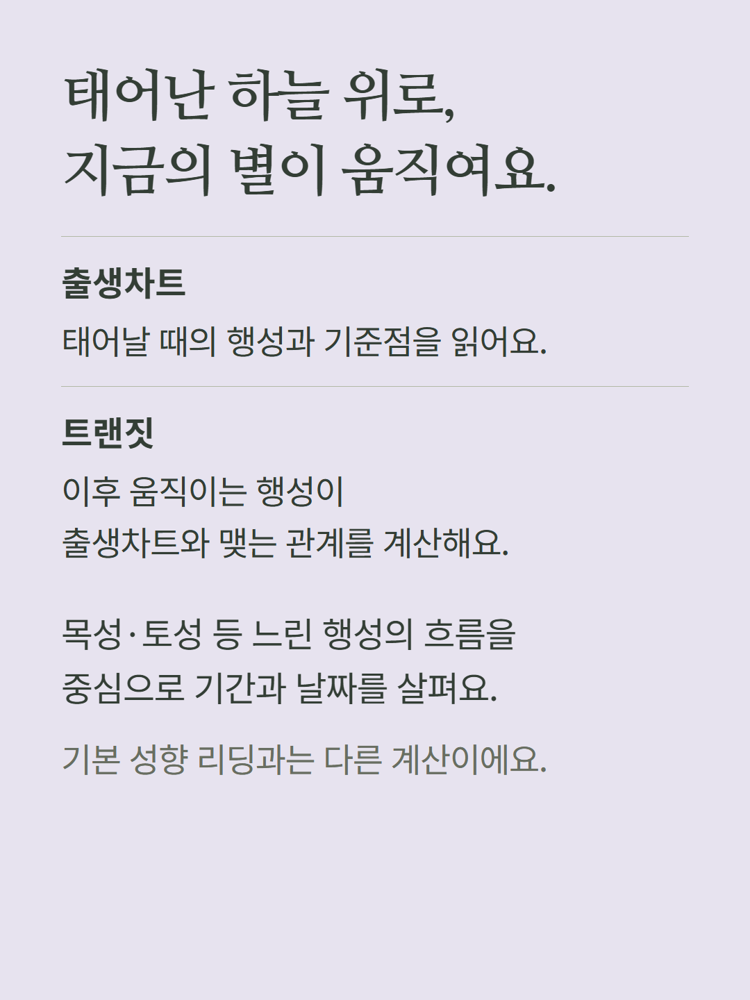
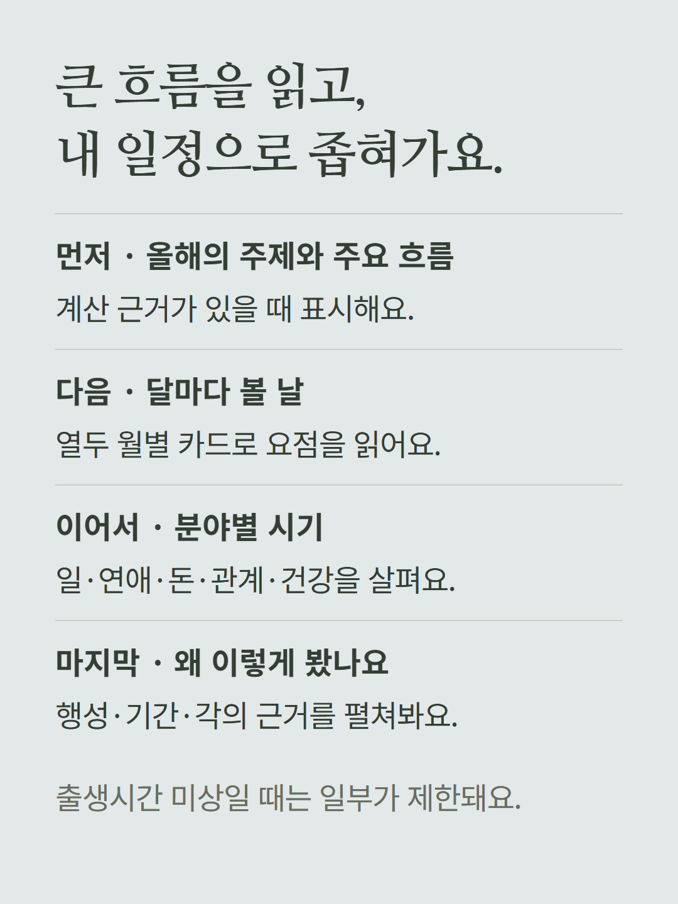
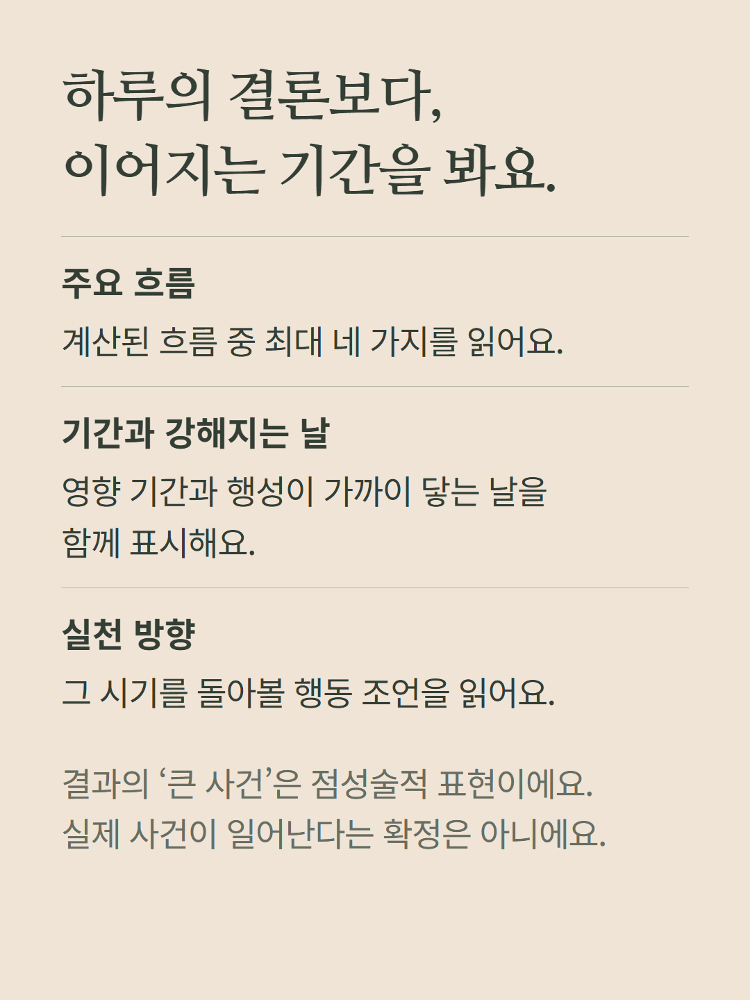
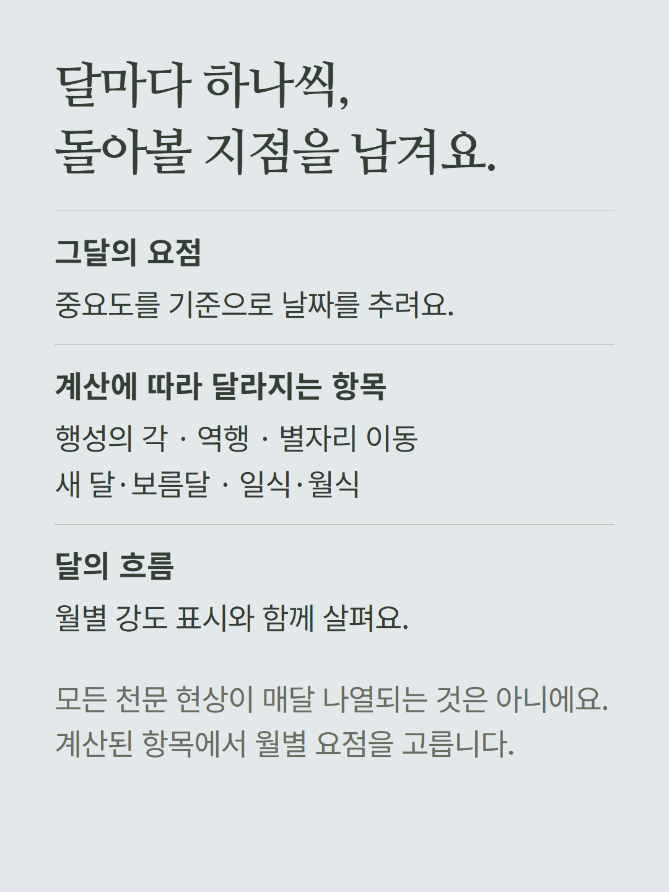
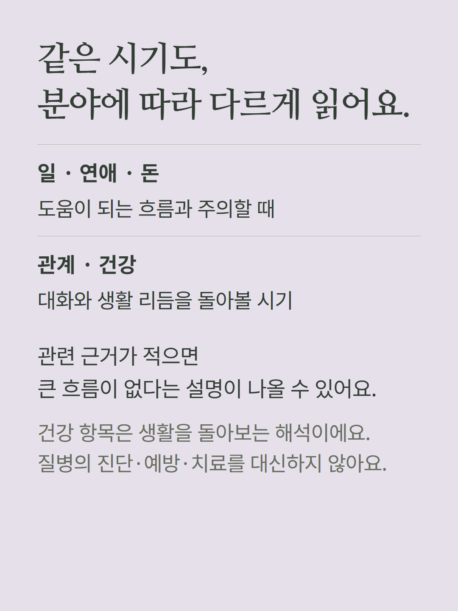
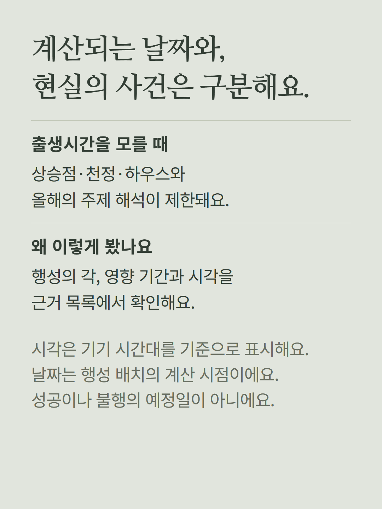
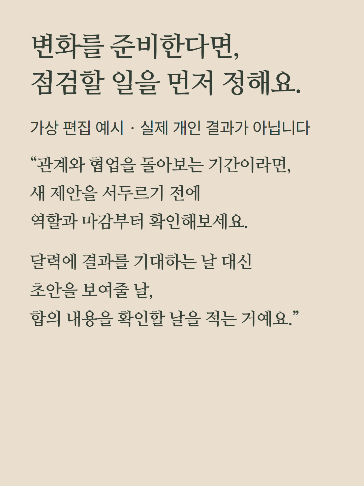

현재 날짜부터 앞으로 12개월의 행성 이동과 출생차트의 관계를 계산하는 개별 해금 항목입니다. 조건부 올해의 주제와 주요 흐름, 열두 월별 카드, 일·연애·돈·관계·건강의 시기, 계산 근거를 읽습니다. 계산되는 날짜는 행성 배치의 시점이며 실제 사건의 발생일이나 성공·질병을 확정하지 않습니다. 출생시간 미상일 때 축·하우스와 올해의 주제는 제한됩니다. 시각은 기기 시간대 기준입니다. 가상 편집 예시를 포함합니다. 기본 차트 심층 패키지와 다른 해금은 별도이며 현재 화면의 가격·결제 조건을 따릅니다.